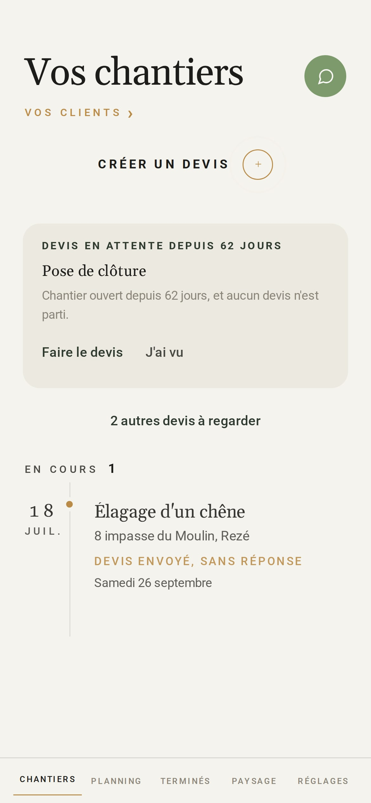
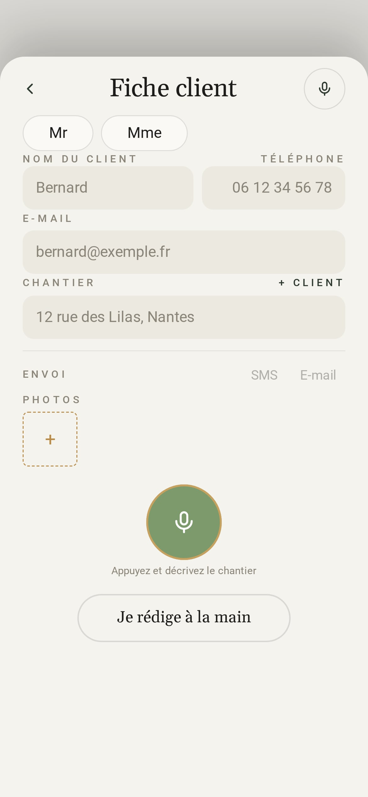
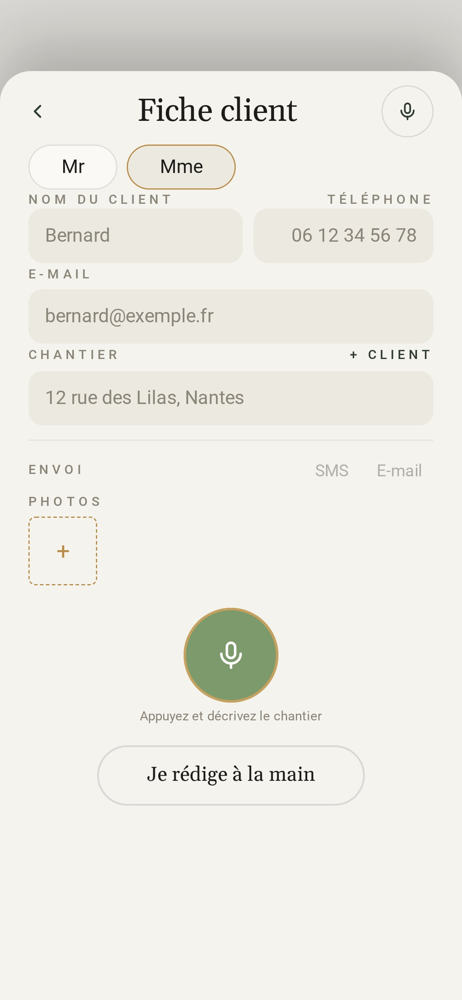
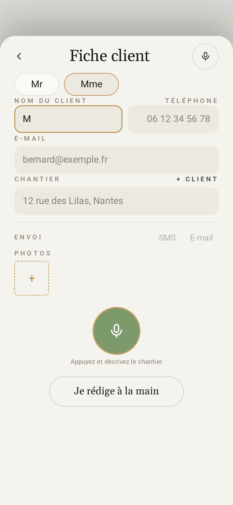
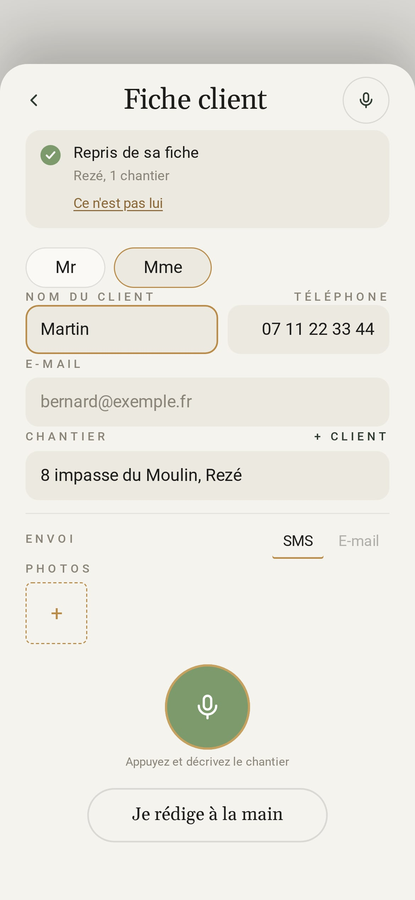
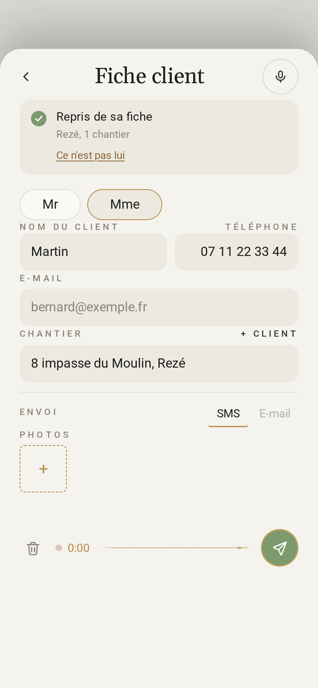

20 minutes
de bureau après chaque visite ?
30 secondes.
avec Atlas








Atlas
Du devis dicté à la facture,
sans rien retaper.
Essai gratuit 15 jours
Tous les outils ouverts
Paysagistes, élagueurs, artisans